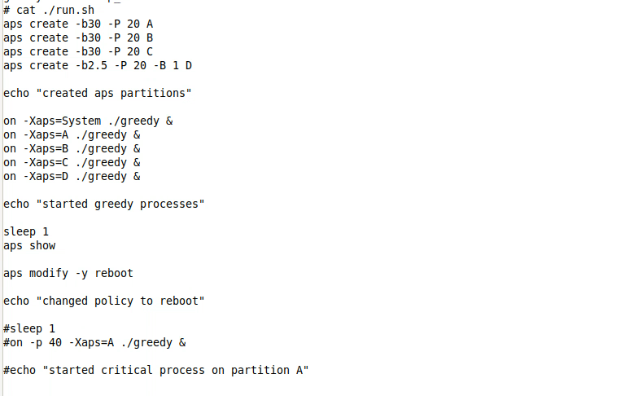
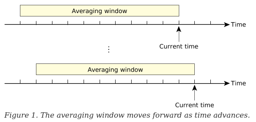

In preparation for my presentation on QNX APS (Adaptive Partitioning Scheduler), I decided to write a blog that goes through what partitions are, how to control resources in QNX, and what APS are. Though a lot of the information is just based on the QNX documentation all put into one page but with examples and referencing other publically available resources (i.e. foundary27, papers, blogs, and what I found from playing around with APS). This page will not go through how to use APS through the Momentics IDE nor will it cover the various C API’s to configure the partition. There’s already a lot to cover, so the C API’s will be potentially covered in another blog post (provided I can muster enough willpower to request and pester QNX for either an educational license or a 30-day trial since I no longer have access to a valid QNX license)
Table of Contents
- Constraining a Single Process
- Constraining Group of Processes
- Partition of a Child Process
- Creating a Partition
- APS In Action
- Lose Control
- Add and Check Processes's Partitions
- Scheduling Behavior During Different Loads
- Critical Threads
- Bankruptcy
- Averaging /Sliding Window
- Payback - Nothing is Free
- Microbilling
- Inheritance
- Random Facts
- Resources
Constraining A Single Process
As resources are limited, there is a need for a way to control how much resources a process can consume.
Traditionally, sysadmin would set limits to users and processes. This is probably noticeable on lab machines in universities,
machines that are shared among many students to prevent any malicious user or process from denying resources to others. This
can be done using ulimit, a utility to view or set limits to a particular process.
For instance, here’s the resource limit of my account on my personal Linux machine.
$ ulimit -Sa
real-time non-blocking time (microseconds, -R) unlimited
core file size (blocks, -c) unlimited
data seg size (kbytes, -d) unlimited
scheduling priority (-e) 0
file size (blocks, -f) unlimited
pending signals (-i) 62398
max locked memory (kbytes, -l) 8192
max memory size (kbytes, -m) unlimited
open files (-n) 1024
pipe size (512 bytes, -p) 8
POSIX message queues (bytes, -q) 819200
real-time priority (-r) 0
stack size (kbytes, -s) 8192
cpu time (seconds, -t) unlimited
max user processes (-u) 62398
virtual memory (kbytes, -v) unlimited
file locks (-x) unlimited
If I was to share the machine with another user, I would for instance limit the number of files and processes that can be opened and spawned to avoid them from fork bombing my machine.
There are POSIX Calls such as getrlimit and setrlimit to display or set resource
consumption. There are other function calls (non-POSIX) such as prlimit to set and
view resource consumption on both QNX and Linux. In fact, rlimit function calls are
just wrappers to prlimit() according to the documentation (QNX and Linux).
Constraining A Group of Processes
However, rlimit resource restriction only applies to each applications. It is not flexible and is unable
to restrict processes as a collective group. That is where
cgroups and partitions come to play. cgroups (Control Groups) is a feature on the Linux kernel
that allows admins to allocate resources to a group/partition of tasks and are much more complex
compared to what QNX offers where only the CPU resources can be controlled. As this is an article
about QNX and not Linux, I will not go into subsystems and how that explains why separate hierarchies of cgroups
are necessary. You can read Redhat’s documentation
if you are interested (I also don’t know much about it anyways).
On QNX, the term partition is used to describe the controlled use of processor resources (i.e. processing time) that is isolated from other partitions (Glossary). Essentially you can divide CPU processing time in virtual objects called partitions where processes can be executed in and be guaranteed to have the CPU time specified in their configuration.

An excerpt from QNX Documentation
As stated earlier, the ability to constrain resources into partitions is to avoid any “single point of failure” whereby a malicious process consumes the entire system resource and starves all other threads (i.e. fork bombs or a DDOS attack). Partitions allows processes in other partitions to receive their allocated share of system resources. This is very crucial especially for projects that require high availability and reliability (there’s a difference between the two terms but I won’t get into it). Another great use case for APS is the abvility to recover from a locked system. To illustrate, you can designate 10% of the CPU to a shell so that whenever disaster strikes, you will still have access to the shell to perform any data recovery, cleanup, and freeing the system from the malicious process/thread.
However, what happens to the remaining CPU time for partitions that don’t utilize their entire allocated CPU time (referred as CPU budget or time budget) such as in the case where you allocate 10% of the CPU to a recovery shell? The recovery shell isn’t going to be needed so it would be a waste for the CPU to not be used. That is where the term “adaptive” comes into the chat. Static partitions cannot share resources and unable to adapt at runtime but adaptive partitions can. QNX offers the ability for partitions to share their left over budget to other partitions to utilize and can be configured at runtime if you decide the current configuration is not desirable.
QNX APS Use Case - Fictious Medical Ventilator
Michael Brown from QNX has written a blog illustrating a use case for APS through the example of a fictious medical ventilator that you should check out.APS - Adapative Partitioning Scheduler
Initial Setup
To utilize APS, you need to ensure that the APS module is loaded into the image. This requires changing your buildfile to include[module=aps] at the beginning of the line where you start `procnto-smp-instr`. You can find more details in
the Quickstart: Adaptive Partitioning Thread Scheduler on the QNX documentation.
Run aps show to see if APS is running on the system.
Example: APS not running on the system
# aps show
Error: APS scheduler not running
When the system boots up, a partition System is automatically created for you. Any process you start from the shell will be assigned to the System partition (assuming you have not
played around with APS on the image buildfile) because by default, child processes/threads belong to the parent’s partition by default.
# aps show
+-------- CPU Time --------+-- Critical Time --
Partition name id | Budget | Max | Used | Budget | Used
--------------------+------------------------+---------------------
System 0 | 100.0% | 100.0% | 0.02% | 200ms | 0.000ms
--------------------+------------------------+---------------------
Total | 100.0% | | 0.02% |
# sleep 10 & #run a process that sleeps for 10 seconds
[1] 671746
# pidin -F "%N %I %e %H" | grep -E "pid-tid|ksh|sleep"
name pid-tid ppid ExtSched
proc/boot/ksh 159757-01 1 System
system/xbin/sleep 671746-01 159757 System
A partition has a few attributes you can set during creation but the only argument required is the CPU budget allocated to the partition. All other parameters are optional and will be explained later.
aps create [-B critical_budget] -b budget [-m max_budget] [-P critical_priority] [partition_name]
Each partitions are allocated a percentage of the CPU over some average time window (explained later). For instance, if we want to create a partition with a budget of 9.8% (i.e. up to one decimal are accepted), you would run the following command:
# aps create -b 9.8
Output:
# aps
+-------- CPU Time --------+-- Critical Time --
Partition name id | Budget | Max | Used | Budget | Used
--------------------+------------------------+---------------------
System 0 | 90.2% | 100.0% | 0.02% | 200ms | 0.000ms
1 1 | 9.8% | 100.0% | 0.00% | 0ms | 0.000ms
--------------------+------------------------+---------------------
Total | 100.0% | | 0.02% |
The partition name 1 is not a very meaningful name so ensure you assign a meaningful name to the partition during creation or else the partition id will be the name. For obvious reasons, partition’s cannot start with a number (i.e. cannot tell apart from id if that was allowed).
# aps create -b 9.8 physicSim
# aps
+-------- CPU Time --------+-- Critical Time --
Partition name id | Budget | Max | Used | Budget | Used
--------------------+------------------------+---------------------
System 0 | 90.2% | 100.0% | 0.02% | 200ms | 0.000ms
physicSim 1 | 9.8% | 100.0% | 0.00% | 0ms | 0.000ms
--------------------+------------------------+---------------------
Total | 100.0% | | 0.02% |
APS In Action
Enough babbling, let’s see APS in action. Let’s create 2 partitions: drivers and recovery where each partition is allocated a budget of 40% and 5% each respectively:
aps create -b 40 drivers
aps create -b 5 recovery
Output:
# aps
+-------- CPU Time --------+-- Critical Time --
Partition name id | Budget | Max | Used | Budget | Used
--------------------+------------------------+---------------------
System 0 | 55.0% | 100.0% | 0.09% | 200ms | 0.000ms
drivers 1 | 40.0% | 100.0% | 0.00% | 0ms | 0.000ms
recovery 2 | 5.0% | 100.0% | 0.00% | 0ms | 0.000ms
--------------------+------------------------+---------------------
Total | 100.0% | | 0.09% |To start and execute a process onto each partition, we’ll be using the on command:
on -Xaps=recovery ksh
on -Xaps=drivers ./gpu-nv &
Output:
# aps
+-------- CPU Time --------+-- Critical Time --
Partition name id | Budget | Max | Used | Budget | Used
--------------------+------------------------+---------------------
System 0 | 55.0% | 100.0% | 0.02% | 200ms | 0.000ms
drivers 1 | 40.0% | 100.0% | 50.00% | 0ms | 0.000ms
recovery 2 | 5.0% | 100.0% | 0.00% | 0ms | 0.000ms
--------------------+------------------------+---------------------
Total | 100.0% | | 50.02% |on utility
on is a utility to execute a command. It's a useful utility to start a process on another remote node, with a CPU affinity, with a priority, or as a different user. In our case, we are using on because it's a simple way to start a process on a partition.Read more at: http://www.qnx.com/developers/docs/7.1/index.html#com.qnx.doc.neutrino.utilities/topic/o/on.html
As you can observe, we have a faulty graphics driver eating up a lot of the CPU. Notice how it is consuming more than the allocated budget the drivers partition has been allocated for. This is due to the fact that partitions can share their allotted CPU time to other partitions during a freetime.
Let’s see what happens when we execute a very computational heavy process which we will call simulate on the default partition System:
# on -Xaps=System ./simulate &
[2] 778262
# aps
+-------- CPU Time --------+-- Critical Time --
Partition name id | Budget | Max | Used | Budget | Used
--------------------+------------------------+---------------------
System 0 | 55.0% | 100.0% | 50.01% | 200ms | 0.000ms
drivers 1 | 40.0% | 100.0% | 49.99% | 0ms | 0.000ms
recovery 2 | 5.0% | 100.0% | 0.00% | 0ms | 0.000ms
--------------------+------------------------+---------------------
Total | 100.0% | |100.00% |As you can see, System partition and the drivers partition consume roughly half of the computation each, consuming the freely leftover CPU resources from the Recovery Partition. Although the System and drivers partition are consuming roughly all of the CPU, we still have control over the shell still. This is because I am running on the shell from the recovery partition.
Emergency Shell
The example I am showing you isn't a realistic approach to recover control of your system. Realistically you would start io-pkt on a partition and qconn as well if you are on a development target (i.e. qconn should not and shall not be deployed on a production system) to ensure you have access to the system without compromising on performance (since unused resources are distributed to other partitions).Reference: http://www.qnx.com/developers/docs/7.1/index.html#com.qnx.doc.adaptivepartitioning.userguide/topic/debugging_Access_.html
Since our shell is on the Recovery partition, we still can interact with the system despite the system running on full capacity. But what happens if we were to strip the recovery partition all of its CPU budget?
The answer is that we lose all control of the system and will require to reboot the system. This can be achieved by using the modify command in the aps utility: aps modify -b 0 recovery
Add and Check Processes’s Partitions
In our previous example, we used on utility to start processes on different partitions. But what if you want to add running threads to different partitions? That is where the join command in the aps utility comes in handy. Let’s say we have a process named foo running on the System partition but we wish to have it run on the drivers partition. We could do the following to migrate the process to execute on the drivers partition:
# pidin -F "%N %I %H" -p foo # we need to know the thread and pid of the thread we wish to migrate
name pid-tid ExtSched
./foo 614402-01 System
# aps join -p 614402 -t 1 drivers
# pidin -F "%N %I %H" -p foo
name pid-tid ExtSched
./foo 614402-01 driversIf you simply want to see what partitions each process in your system is running on, you can simply run pidin sched.
I just used a more compilicated option because I needed both the pid and tid to migrate the thread to another partition.
Scheduling Behavior During Different Loads
Before I get into the technical details how the scheduler works, let’s look at what the scheduling behavior under different loads are like. For now we’ll only consider the following scenarios (we’ll be omitting details about by critical threads and the behavior of the scheduler in freetime-by-ratio mode for this section):
- Underload
- Partition A using over their budget but there’s still free time
- Full Load
1. Partition using less than it's budget
When partitions do not consume over it’s assigned budget is called an underload. Since it’s not overloaded, a strict realtime scheduler is applied where the highest priority threads gets to be executed.
# aps
+-------- CPU Time --------+-- Critical Time --
Partition name id | Budget | Max | Used | Budget | Used
--------------------+------------------------+---------------------
System 0 | 55.0% | 100.0% | 0.01% | 200ms | 0.000ms
drivers 1 | 40.0% | 100.0% | 0.25% | 0ms | 0.000ms
recovery 2 | 5.0% | 100.0% | 2.08% | 0ms | 0.000ms
--------------------+------------------------+---------------------
Total | 100.0% | | 2.35%|Example of an underload
2. Partition A using over their budget
Freetime occurs when a partition has no READY threads so it lends its CPU time to other partitions that have READY threads. Similarly to the previous case, the scheduler will choose the highest READY priority thread to run because the CPU time will be distributed to other partitions since there are “freetime” from one of the partitions. What if all the remaining partitions have the same highest priority? Who gets more of the share of the idling CPU time (i.e. freetime) from the sleeping partition? The scheduler will divide the freetime between the remaining partitions based on the proportions of their allocated (i.e. normal) budget.
# aps
+-------- CPU Time --------+-- Critical Time --
Partition name id | Budget | Max | Used | Budget | Used
--------------------+------------------------+---------------------
System 0 | 50.0% | 100.0% | 0.10% | 200ms | 0.000ms
Alice 1 | 30.0% | 100.0% | 60.85% | 0ms | 0.000ms
Bob 2 | 20.0% | 100.0% | 39.05% | 0ms | 0.000ms
--------------------+------------------------+---------------------
Total | 100.0% | |100.00% |Notice how the freetime is distributed to the remaining partition based on their proportions of their normal budget
In the sample output below, we have two partitions: Alice and Bob where Bob has two threads with a priority of 20 and Alice has two threads with a lower priority of 10 and the System partition (default partition) isn’t using much of its budget so their budget so the CPU time is distributed to other partitions. Notice how threads under Alice gets the minimum budget but Bob having higher priority threads consumes way over its assigned budget (like the greedy person he is) despite having a smaller budget than Alice.
# aps
+-------- CPU Time --------+-- Critical Time --
Partition name id | Budget | Max | Used | Budget | Used
--------------------+------------------------+---------------------
System 0 | 50.0% | 100.0% | 0.03% | 200ms | 0.000ms
Alice 1 | 30.0% | 100.0% | 30.62% | 0ms | 0.000ms
Bob 2 | 20.0% | 100.0% | 69.35% | 0ms | 0.000ms
--------------------+------------------------+---------------------
Total | 100.0% | |100.00% |A Full Load is when all partitions need their entire budget. The default scheduling behavior is to divide the time between the threads in the partition based on the ratio of their budgets. However, there is no guarantee each partition will get billed its share of the CPU because we still need to guarantee real time performance (will be looked at later).
# aps
# aps
+-------- CPU Time --------+-- Critical Time --
Partition name id | Budget | Max | Used | Budget | Used
--------------------+------------------------+---------------------
System 0 | 50.0% | 100.0% | 49.68% | 200ms | 0.000ms
Alice 1 | 30.0% | 100.0% | 30.34% | 0ms | 0.000ms
Bob 2 | 20.0% | 100.0% | 19.98% | 0ms | 0.000ms
--------------------+------------------------+---------------------
Total | 100.0% | |100.00% |Notice how each partition is using based on their assigned budgets
Critical Threads
I have been hinting about critical threads a few times and you’ve been seeing an entire
section of the output in APS reserved for Critical Time. So you may be asking what is it?
# aps
# aps
+-------- CPU Time --------+-- Critical Time --
Partition name id | Budget | Max | Used | Budget | Used
--------------------+------------------------+---------------------
System 0 | 50.0% | 100.0% | 49.68% | 200ms | 0.000ms
Alice 1 | 30.0% | 100.0% | 30.34% | 0ms | 0.000ms
Bob 2 | 20.0% | 100.0% | 19.98% | 0ms | 0.000ms
--------------------+------------------------+---------------------
Total | 100.0% | |100.00% |QNX is a realtime OS meaning that it needs to be able start and complete its task on time with the most minimal amount of delay. This is where critical threads come into play. A Critical thread is a thread that have “strict realtime requirements” meaning they can be pre-empted to ensure realtime performance.
To achieve this realtime requirements, critical threads by design are allowed to go over the normal budget of a partition provided the partition has a critical budget.
For a partition to go over its budget during a fully loaded system, a critical budget greater than 0ms must be assigned to the partition. A critical budget is the number of milliseconds that the critical thread in a partition can consume during the average time window if the partition has exhausted its normal budget (QNX - Critical Threads). Since critical threads are pre-empted, other partitions will not meet its budget (i.e. will not consume their allotted CPU time).
A thread is considered critical in a partition if the thread’s priority is at or greater than the
critical priority set during the creation of the partition (though you can use aps modify -P if you forgot).
If the system is not currently overloaded, then the critical budget will not be billed because there’s available CPU resources it can take from.
A critical budget is billed only if the running partition ran out of budget (provided the partition had a non-zero critical budget) and is competing with at least one other partition for CPU time.
This means that if there is freetime or the partition has remaining normal budget left, the scheduler will not bill the critical thread for running.
What happens if a partition exceeds its critical budget? A bankruptcy will occur which will be the next topic.
Side Note: If a critical thread is killed, the system crashes (QNX - on utility with -c options).
Though I am not seeing a connection between APS critical threads and critical threads set by the on utility but I will need to investigate more on this.
Bankruptcy
What happens when a company runs out of money? It goes bankrupt. Similarly, if a partition is billed for the critical CPU time that exceeds its critical budget, the partition will become bankrupt. There are three ways to handle bankruptcy:
- Basic (default): deliver bankruptcy notification events and make the partition out of budget for the rest of the scheduling window
- notify of bankruptcy to the system
- cannot run till it receives more funding (i.e. budget)
- at minimum needs to wait the number of milliseconds the critical budget was set to before it can run again
- Cancel: Set partition’s critical budget to 0ms meaning it cannot use its critical budget
- need to restore critical budget if you want to use critical CPU time (i.e.
aps modify -BorSCHED_APS_MODIFY_PARTITIONcommand to theSchedCtl())
- need to restore critical budget if you want to use critical CPU time (i.e.
- Reboot: system crash with offending partition (should be used for testing purposes only)
I like to view the 3 bankruptcy policies as the following:
- Basic: Notify the public that the company is bankrupt and will not be doing business for some time till the company does some restructuring.
- Cancel: Cancel all new projects and research since the company is low in cash. Once money is injected to the company, it will not be working on anything new.
- Reboot: Business crashed and was forced to shutdown all operations.
Similarly to how poor business decisions can lead companies to bankruptcy, if a bankruptcy occurs, it is considered the design error of the application.

An example of bankrupting a partition using the reboot policy
Averaging/Sliding Window
So far, we have covered the following:
- what resource constraint QNX provides
- What APS is
- How to create a partition
- How to start/move a thread in/into a partition
- Partition scheduling under different resource state (i.e. underload and overload)
- What bankruptcies are
But the underlying mechanism for most of the topics covered rely on a single concept that I have been omitting which is how the scheduler calculates the average CPU usage and what does it mean to use some percent of the CPU time. If a partition is reported to use 1% of the CPU, what does that roughly translate in terms of a unit of time? How often does the CPU usage get updated? These are the types of questions one may have asked during this tutorial on APS.
In QNX, the scheduler calculates the average CPU usage over some interval of time called a time window whose value is called the window size. The average CPU time is calculated after some unit of time which is typically after each tick or 1ms. The default window size is 100ms meaning the time reported by APS is the average CPU usage from the past 100ms. The scheduler keeps a track of the usage history over ther duration of the window allowing us to know how much each partition consumed in the past 100ms (or whatever the window size is).

Taken from the QNX documentation
The reason why you may see the averaging window be referred as a sliding window is because the window moves forward as time advances. The implication is that the oldest time slot in the window gets overwritten meaning the scheduler never remembers anything older than its window size.
So if our window size is 100ms and a partition is reporting a CPU usage of 1%, then the partition has been using about 1ms of the CPU time in the past 100ms.
The window size can be changed using the aps utility with the -w option.
The window size can be from 8ms-400ms but making the window size too small or large does have consequences. Refer to the QNX documentation for more information
Payback - Nothing is Free
Now that we understand how the scheduler keeps track of the CPU usage via the averaging time window, we can go over another detail that I omitted previously. Recall that unused CPU from a sleeping partition (i.e. a partition that has no ready threads) has their CPU runtime distributed to other active partitions to avoid wasting unused CPU time. This behavior can be seen as lending CPU time to other partitions meaning it needs to be “repaid” eventually. Recall that partitions only borrow CPU time from other partitions if the partition has consumed all of its available CPU time (i.e. budget).
What would happen if a sleeping partition wakes up? The scheduler still needs to ensure that the partition get its “guaranteed” CPU time. So any partitions that have borrowed time from the sleeping partition will need to repay back by yielding it CPU time to the once sleeping partition. This is done by the scheduler who keeps track of the CPU usage from the past window size. Recall how the averaging time window only tracks the past [window size]ms of CPU activity. This means that the scheduler is not great at memorizing the debt of other partitions so partitions does not need to repay its entire debt, only the debt the scheduler recalls. Too bad this does not apply to real life.
A consequence of this feature where unused CPU is lended to other partitions is that it can raise latency (i.e. response time). This may not be ideal in a realtime operating system where the processes need to be executed with strict realtime needs. For instance, a higher priority thread may be forced to wait for a long time since the partition needs to repay part of its debt. So as system designers, you need to consider whether or not this feature should be utilized or not. Forcing a maximum CPU time can be used to disable this feature. A group of Engineers at Bosch has written a nice paper that explains various issues with APS that I encourage you to take a quick read on.
Microbilling
The billing of partitions by calculating the average time window on every tick or millisecond is not fine (detailed) enough so QNX introduced a concept of micro-billing. I am going to be very brief on this topic and paste a quote I found from Foundary27 on this topic:
Micirobilling means accounting for the cpu time used by a thread to much finer resolution than the clock period between tick interrupts. – Foundary27 - APS: How does it work
Essentially timestamps of when the threads enter and leave the RUNNING state are tracked and the difference between the two are charged to the thread.
Inheritance
Recall how I mentioned that a thread started on the shell (running on the System partition) will run on the System partition by default. This was an example of how children inherit the parent’s partition by default. But what about message handling? Does the client sending a message get billed or will the server who recieves the message get billed for handling the message? By default, APS will bill the client if the client sends a message to the server. So the time spent by the server to handle the client’s message is not billed to the server but rather to the client. To achieve this, the server will inherit the partition of the client temporarily to serve the client from my understanding. But the same cannot be said for pulses unfortunately. Pulses are billed to the receiving end and not the client who sent the pulses.
Random Facts
I will likely conclude my talk on APS by listing random facts about APS. This likely will be my last post on QNX unless I get another opportunity to fiddle with QNX (i.e. QNX is not an open source OS so a license is required to fiddle around).
- APS scheduling overhead increases with more partitions but not with the increase of threads
- there is a maximum of 32 partitions
- partitions cannot be deleted once created - The best approach to deactivate the partition is to set the budget and the max budget of the partition to 0%
Resources:
- Redhat - Resource Management
- Kernel - cgroups
- LWN - Process Containers
- QNX - sh util
- QNX - setrlimit
- Bosch Brief Inustry Paper: Dissecting the QNX Adaptive Partitioning Scheduler
- EETimes - Adaptive partitioning proposed to secure embedded designs
- QNX - Adaptive Partitioning
- QNX - Critical Threads
- Patent US 9,361,156 B2 - DAPTIVE PARTITIONING FOR OPERATING SYSTEM
- Foundary27 - APS Requirements
- Foundary27 - APS How it Works
- http://www.realtimecontrol.hu/qnx/docs/194.10_Adaptive_Part_TDK.pdf